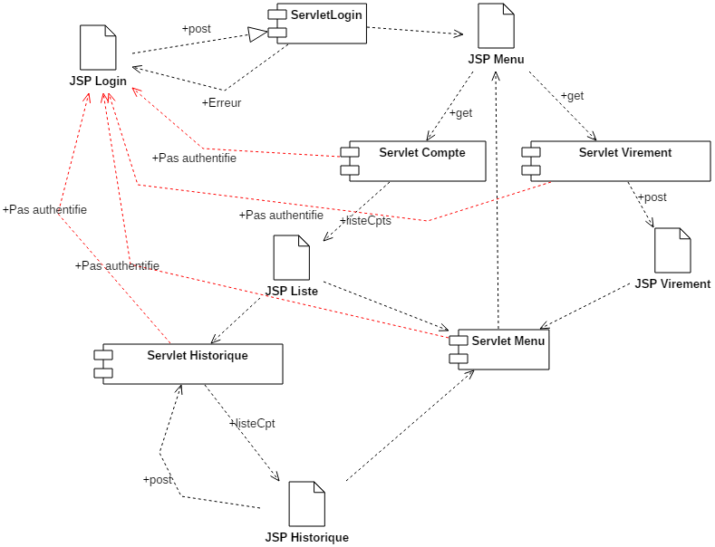
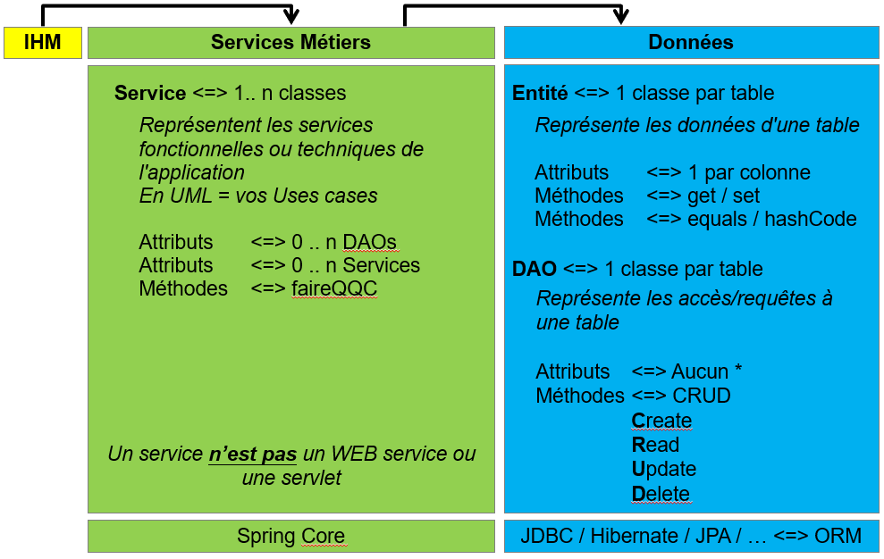

Nous allons réaliser un site qui gère les comptes bancaires.
Nous devrons respecter le MVC et faire usage de la JSTL.
Le code métier (couches services et données) est déjà codé, nous allons réaliser la partie web et faire usage du code déjà écrit.
Une maquette statique du site est disponible ici, vous pouvez vous en inspirer.
Important : cet exercice fait usage d'une DataSource qui est définie dans le fichier src\main\webapp\META-INF\context.xml. Du coup la classe AccesBD ne fonctionne plus de la même manière.
Importez le projet en04.banque.mvc qui se trouve dans le répertoire de l'énoncé (File/Import -gt; Existing Maven Projects puis indiquez le dossier).
Le nom du context root est en04.banque.mvc. Vous trouverez des commentaires dans les classes Java pour vous aider dans l'exercice.
Cet exercice fait usage d'une DataSource qui est définie dans le fichier src\main\webapp\META-INF\context.xml. Du coup la classe AccesBD ne fonctionne plus de la même manière.
AccesBD est un singleton. Cet object sera frabriquer 0 ou une fois pour toute la durée de vie du programme. Il n'appartient à personne en particulier.
Exemple d'utilisation :
String login = "df"; String pwd = "df"; int userId = AccesBD.getInstance().authentifier(login, pwd);
AccesBD.getInstance() récupère l'instance courante du singleton, .authentifier(login, pwd); fait usage de la méthode métier authentifier qui valide qu'un utilisateur de la banque peut faire usage du site web. (aucun rapport avec le login/pwd d'accès à la base de données)
Respectez bien la mécanique MVC : C -> V -> C -> V -> C -> V -> ...
Voici les enchaînements d'écrans :
Editez la page login.html afin de la transformer en une JSP : login.jsp. Elle contient un formulaire qui demande un login et un mot de passe.
Pensez à utiliser la JSTL et faites toujours en sorte que les URL (images, CSS, JS, ...) soient fabriqués via un
<c:url value="/chemin/mon.gif"/>
Le formulaire aura comme URL d'action la valeur de l'URL du contrôleur de destination (ici la servlet qui s'occupe du login).
Editez la servlet fr.web.ServletLogin. Dans la méthode service (ou doGet ou doPost) vous allez écrire le code qui va
protected void doGet(HttpServletRequest request, HttpServletResponse response) throws ServletException, IOException { RequestDispatcher dispatcher = request.getRequestDispatcher("NomEtCheminDeLaPageOuVousVoulezAller.jsp"); dispatcher.forward(request, response); }
...
String monParam1 = request.getParameter("nomDuParamDansLeFormulaireOuLurl");
...
... Integer idUtilisateurTireDeLaBase = leCodeQuiVaLeChercherEnAllantLireLaDocDeAccesBD; // Vous pouvez aussi faire usage d'un int a la place de Integer (boxing) ... HttpSession session = request.getSession(true); session.setAttribute("nomDeVotreClef", idUtilisateurTireDeLaBase); ...
... RequestDispatcher dispatcher = request.getRequestDispatcher("NomEtCheminDeLaPageOuVousVoulezAller.jsp"); dispatcher.forward(request, response); // Pensez a faire un return afin de casser l'execution du code de votre methode return;
...
request.setAttribute("nomDeVotreClefErreur", "Votre message d'erreur");
...
Ajustez le code de la page login.jsp afin qu'elle affiche le message d'erreur s'il y en a un. Faites-le en JSTL ou en Java.
Notez que cette servlet ne fabrique pas de flux HTML, elle redirige vers la JSP qui s'en charge.
Information concernant l'injection SQL : http://fr.wikipedia.org/wiki/Injection_SQL
Editez la servlet fr.web.ServletMenu. Elle devra
...
// Utilisez un Integer et pas un int
// Integer : peut être null
// int : ne peut pas être null
Integer idUtilisateurDansMaSession = (Integer)request.getSession(true).getAttribute("nomDeVotreClef");
...
La servlet Menu sera utilisée dans les JSPs (liste des comptes, historiques, virement) afin de retourner au menu.
La JSP menu ne fera pas grand-chose, à partir d'elle on peut soit aller vers la liste de ses comptes, soit réaliser un virement.
Elle peut aussi servir à afficher un message d'erreur ou un message de bienvenue.
Editez la servlet fr.web.ServletCompte. Elle devra
Question : Peut-on mettre la liste des comptes dans la session ?
La JSP comptes/liste.jsp devra
Editez la servlet fr.web.ServletHistorique. Elle devra :
Question : Peut-on mettre la liste des opérations dans la session ?
La JSP comptes/historique.jsp devra
Editez la servlet fr.web.ServletVirement. Elle devra :
La JSP comptes/historique.jsp devra
La correction exo04.banque.mvc.full, reprend le même exercice mais y introduit des éléments supplémentaires :
